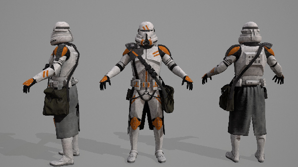
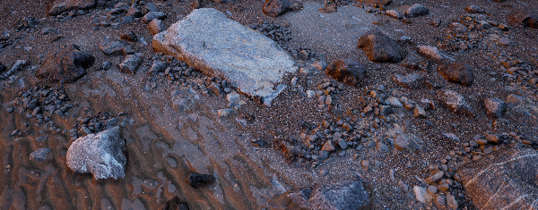
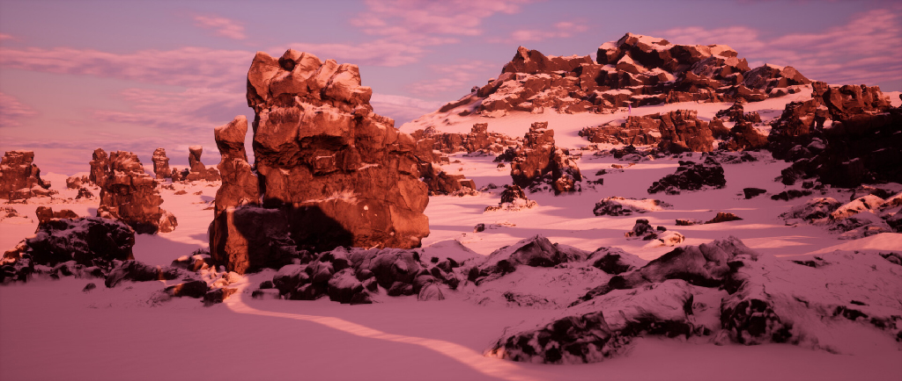

Multi-Threaded CPU Ray-tracing
This was the last project for my Advance Tech module. The task was to create a C++ ray-tracer with features like bounding volume hierarchy,
multi-threading, image exporting, 3D mesh loading, materials, textures loading, atmospheric lighting etc.
You can find the repository for this project here.

Clay render using a Multi-Layered BRDF
The physically based clay rendering uses a Multi-layered BRDF with standard PBR features like Image Based Lighting (IBL) for the first layer. Each BRDF layer uses the Cook-Torrance BRDF.
This was part of the second task for the Advance Tech Module.
More information can be found here.
Non-Physically Based Rendering
An exploration into Non-Physically Based Rendering techniques to create different art styles like halftone, hatching, cartoon etc.
The project explores using surface shaders and post-processing to create these art styles and effects and combine them together using a stencil buffer
to create new effects and styles.
The project can be found here

DirectX First Person Shooter
A First Person Shooter (FPS) inspired by older FPS games like Doom, Half Life and Quake. This was developed using DirectX 11 and features
map loading, custom 3D models, physically Based Rendering (PBR).
The project can be found here.
Rendering Volumetric Density using a Neural Network
This is my dissertation that explores whether a neural network can be used to sample density instead of using a 3D texture for volumetric rendering.
Part of this project was also re-creating volumetric cloud rendering as seen in video games and a comparison is made to see if a neural network is more optimized than
using a 3D texture.
The project can be found here
Kojima Wars
This project is a reimagining of Herzog Zwei. The project was developed by 40+ people using the Unity engine.
My role mainly consisted of creating both the level design pipeline and asset pipeline for the level designs. As well, I also made effect like the water using shaders.

Rock Shaders
This was my first project using the Unreal Engine 5 (UE5). It explores creating a rock shader that renders the same consistent detail across different sized rocks
without losing detail or having a repeating texture pattern. This project was originally developed in UE4 but was ported over to UE5 for the new lighting.
The renders can be found here.
Oreo Texture
A fun project that I worked on a few years ago where I created an Oreo texture using Substance Designer.
The renders can be found here.

Star Wars 212th Airborne Clone Trooper
I'm a fan of the 212th Airborne Clone Trooper so I modeled the helmet in Zbrush and combined the helmet with the clone trooper's body
from DICE's Star Wars Batterfront 2.
The renders can be found here.

Welsh Beach
This was my first project which explored using photogrammetry and texture scanning for asset creation.
The renders can be found here.

Snowy landscape
I was inspired by Red Dead Redemption 2 snow trails so I tried to re-create them in the Unreal Engine 4. On top of that, I was also inspired by
the mesh blending in the landscape in DICE's Start Wars Battlefront and also tried to re-create that using virtual textures. As well, the lighting for the scene
was also inspired by DICE's Start Wars Battlefront Hoth map.
The renders can be found here.


{kind=link}
{kind=link}
{kind=link}
{kind=link}
{kind=link}
{kind=link}